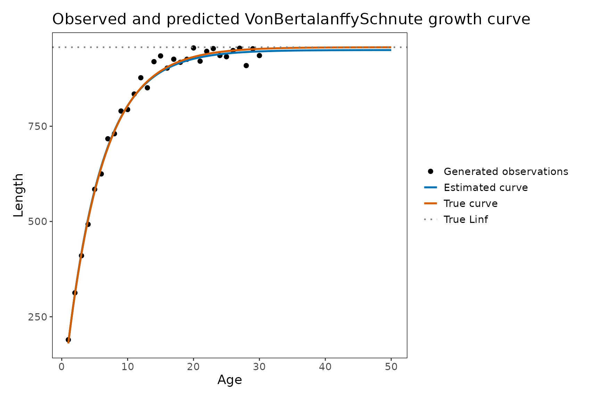
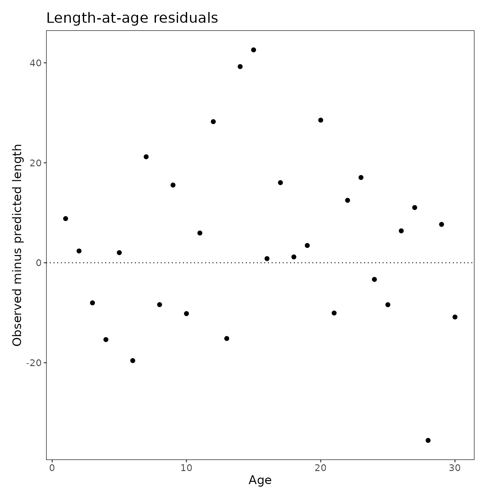
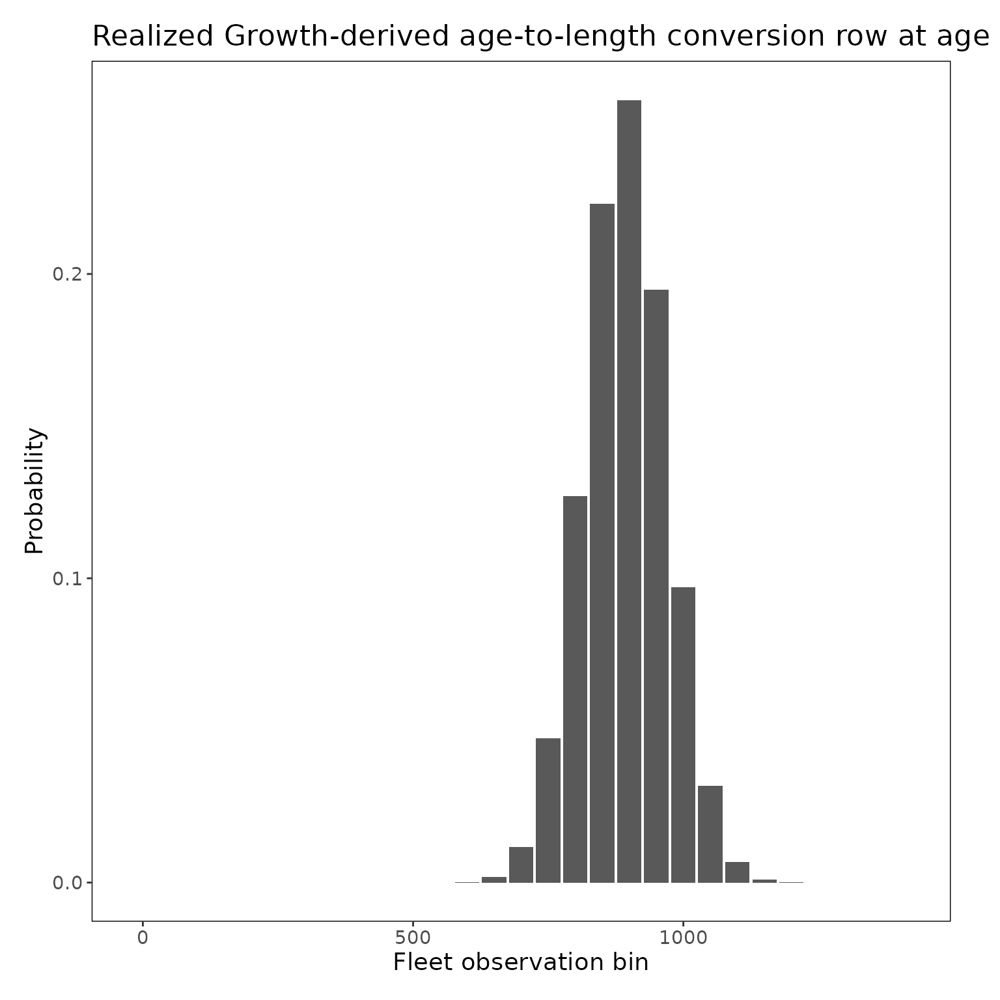

FIMS Growth With VonBertalanffySchnute
Source:vignettes/fims-growth-vonb-schnute.Rmd
fims-growth-vonb-schnute.RmdThis vignette walks through the VonBertalanffySchnute
growth pathway in FIMS fitting to simulated data with known growth
parameters. The example shows how to create data, set up model-derived
growth output, fit the model, compare estimated growth parameters to
true parameters, and inspect the Growth outputs that feed length-based
fleet calculations.
The VonBertalanffySchnute growth module uses two
reference ages to estimate the specific lengths on the growth curve
instead of the standard
and $L_{\infinity}$. Thus, the growth
curve is defined by length at two reference ages, young and old, and the
growth coefficient,
.
In this example, the following three Growth parameters are estimated: -
mean_length_young - mean_length_old -
growth_coefficient
FIMS uses the fitted growth curve and supplied variability in length-at-age to prepare mean length-at-age, standard deviation of length-at-age, mean weight-at-age, and the growth-derived age-to-length conversion used by length-based fleet calculations. For the later, we use the term “growth-derived” age-to-length conversion because users can also specify an age-to-length conversion in their data, along with empirical weight-at-age data, and bypass estimating growth but still fit to length-composition data. So, growth-derived refers to the fact that the conversion is estimated from growth parameters rather than user input.
This vignette uses the interpolation-based variability pathway that
supplies the standard deviation at the two reference ages through
length_at_age_sd_at_reference_ages.
Note: The delta-method variability pathway is wired into FIMS, but it is not used here because it depends on using von Bertalanffy growth, which is not yet available in FIMS.
Main Example: Estimable VonBertalanffySchnute With Generated Data
Data is simulated for this vignette rather than using
data_big to allow for ages 1–30, rather than a maximum age
of 12. The wider age range makes the shape of the fitted curve easy to
inspect, and thus the properties of the module can be better explained
than if we were to use data_big. But, the model does take
longer to run because it is fitting to more data bins than if there were
less ages.
Build a Compact Generated Data Set
The helper below creates one population, one fleet, and two model years. Two years are used so the generated data form a complete catch-at-age model while remaining small enough for interactive branch testing.
The generated data include: - age-composition proportions - length-composition proportions - weight-at-age values - catches - explicit fleet length-bin rows - the true mean length-at-age and standard deviation of length-at-age
It also generates a small set of noisy length-at-age observations for the comparison plot. Those plotting observations are retained separately and are not passed to FIMS as model inputs.
library(FIMS)
library(dplyr)
library(tidyr)
library(ggplot2)
# Define the Schnute parameterization of the von Bertalanffy growth function
# used to generate the known Growth truth for this example.
vonb_two_reference_age <- function(
age,
mean_length_young,
mean_length_old,
growth_coefficient,
reference_age_for_length_young,
reference_age_for_length_old
) {
# Normalizes the curve so it is anchored to both reference-age lengths.
denominator <- 1 - exp(
-growth_coefficient *
(reference_age_for_length_old - reference_age_for_length_young)
)
# Predict mean length at age using the same curve shape FIMS estimates.
mean_length_young +
(mean_length_old - mean_length_young) *
(
1 - exp(
-growth_coefficient *
(age - reference_age_for_length_young)
)
) / denominator
}
# Calculate the asymptotic length implied by the two-reference-age form.
vonb_implied_linf <- function(
mean_length_young,
mean_length_old,
growth_coefficient,
reference_age_for_length_young,
reference_age_for_length_old
) {
mean_length_young +
(mean_length_old - mean_length_young) /
(
1 - exp(
-growth_coefficient *
(reference_age_for_length_old - reference_age_for_length_young)
)
)
}
# Build a compact generated data set with one population and one fleet.
# FIMS fits the model later; this function only creates the example data.
make_vonb_demo_data <- function(
ages = 1:30,
lengths = seq(0, 1400, 50),
years = 1:2,
fleet = "fleet_demo",
sample_size = 300,
mean_length_young = 180,
mean_length_old = 850,
growth_coefficient = 0.18,
reference_age_for_length_young = 1,
reference_age_for_length_old = 12,
length_weight_a = 2.5e-11,
length_weight_b = 3,
sd_at_reference_ages = c(30, 73)
) {
# Calculate the "true" growth products used to generate the example.
true_curve <- tibble::tibble(
age = ages,
true_mean_length = vonb_two_reference_age(
age = ages,
mean_length_young = mean_length_young,
mean_length_old = mean_length_old,
growth_coefficient = growth_coefficient,
reference_age_for_length_young = reference_age_for_length_young,
reference_age_for_length_old = reference_age_for_length_old
),
true_sd_length = stats::approx(
x = c(
reference_age_for_length_young,
reference_age_for_length_old
),
y = sd_at_reference_ages,
xout = ages,
rule = 2
)$y
) |>
dplyr::mutate(
true_weight_at_age =
length_weight_a * true_mean_length^length_weight_b
)
# Derive the implied Linf from the known two-reference-age growth parameters.
# Linf is not estimated directly here; it is used only as a truth reference.
true_linf <- vonb_implied_linf(
mean_length_young = mean_length_young,
mean_length_old = mean_length_old,
growth_coefficient = growth_coefficient,
reference_age_for_length_young = reference_age_for_length_young,
reference_age_for_length_old = reference_age_for_length_old
)
# Use a declining age distribution for the generated population.
age_weights <- exp(-0.18 * (ages - min(ages)))
age_probabilities <- age_weights / sum(age_weights)
# Create age-composition observations for each modeled year and age.
# The same known age distribution is repeated across years so the generated
# data give the model age-structure information without adding extra
# year-specific variation.
age_comp_rows <- tidyr::expand_grid(
timing = years,
age = ages
) |>
dplyr::mutate(
type = "age_comp",
fleet = fleet,
length = NA_real_,
observed = age_probabilities[match(age, ages)],
unit = "proportion",
uncertainty = as.character(glue::glue(
"~dmultinom(prob = agecomp_proportion, size = {sample_size})"
))
) |>
dplyr::select(
type,
fleet,
age,
length,
timing,
observed,
unit,
uncertainty
)
# Calculate the probability of each modeled length conditional on age.
age_length_probabilities <- tidyr::expand_grid(
age = ages,
length = lengths
) |>
dplyr::left_join(true_curve, by = "age") |>
dplyr::group_by(age) |>
dplyr::mutate(
conditional_probability = stats::dnorm(
x = length,
mean = true_mean_length,
sd = true_sd_length
),
conditional_probability =
conditional_probability / sum(conditional_probability)
) |>
dplyr::ungroup()
# Marginalize across ages to create the fleet length composition.
length_comp_rows <- age_length_probabilities |>
dplyr::mutate(
age_probability = age_probabilities[match(age, ages)]
) |>
dplyr::group_by(length) |>
dplyr::summarize(
observed = sum(age_probability * conditional_probability),
.groups = "drop"
) |>
tidyr::crossing(timing = years) |>
dplyr::mutate(
type = "length_comp",
fleet = fleet,
age = NA_real_,
unit = "proportion",
uncertainty = as.character(glue::glue(
"~dmultinom(prob = lengthcomp_proportion, size = {sample_size})"
))
) |>
dplyr::select(
type,
fleet,
age,
length,
timing,
observed,
unit,
uncertainty
)
# Use the known growth curve to create weight-at-age inputs.
# These values give the generated example a truth-based weight-at-age source
# that can be compared with the growth-derived WAA reported after fitting.
weight_at_age_rows <- true_curve |>
dplyr::transmute(
type = "weight_at_age",
fleet = fleet,
age = age,
length = NA_real_,
timing = min(years),
observed = true_weight_at_age,
unit = "mt",
uncertainty = NA_character_
)
# Add simple catch observations for each modeled year.
# These keep the generated model connected to a fleet-level catch component.
catch_rows <- tibble::tibble(
type = "catch",
fleet = fleet,
age = NA_real_,
length = NA_real_,
timing = years,
observed = rep(2500, length(years)),
unit = "mt",
uncertainty = "~dlnorm(meanlog = log_catch_expected, sdlog = 0.2)"
)
# Make the fleet observation geometry explicit so it can be modified.
length_bin_rows <- tibble::tibble(
type = "length_bin",
fleet = fleet,
age = NA_real_,
length = lengths,
timing = NA_real_,
observed = NA_real_,
unit = "proportion",
uncertainty = NA_character_
)
# Combine all generated row types into one long FIMS input table.
# The resulting table contains the fleet observations, weight-at-age inputs,
# and length-bin geometry used to build the example FIMSFrame.
raw_data <- dplyr::bind_rows(
catch_rows,
age_comp_rows,
length_comp_rows,
weight_at_age_rows,
length_bin_rows
)
# Create separate noisy observations for plotting only.
observed_laa <- true_curve |>
dplyr::mutate(
observed_length = stats::rnorm(
n = dplyr::n(),
mean = true_mean_length,
sd = true_sd_length / sqrt(15)
)
) |>
dplyr::select(
age,
true_mean_length,
true_sd_length,
observed_length
)
# Return both the FIMS-ready data object and the known-truth pieces used for
# later checks and plots. Keeping these together makes each scenario easy to
# rerun with different growth or bin settings.
list(
frame = FIMS::FIMSFrame(raw_data),
raw_data = raw_data,
ages = ages,
lengths = lengths,
years = years,
true_curve = true_curve,
observed_laa = observed_laa,
true_linf = true_linf,
true_parameters = tibble::tibble(
label = c(
"mean_length_young",
"mean_length_old",
"growth_coefficient",
"reference_age_for_length_young",
"reference_age_for_length_old"
),
true_value = c(
mean_length_young,
mean_length_old,
growth_coefficient,
reference_age_for_length_young,
reference_age_for_length_old
)
)
)
}
# Set the seed so the generated observed length-at-age values are reproducible.
set.seed(1908)
# Build the generated VonBertalanffySchnute example data.
demo <- make_vonb_demo_data()
# Inspect the data types and modeled ranges before configuring the model.
methods::show(demo$frame)
#> # A tibble: 6 × 8
#> type fleet age length timing observed unit uncertainty
#> <chr> <chr> <dbl> <dbl> <dbl> <dbl> <chr> <chr>
#> 1 age_comp fleet_demo 1 NA 1 0.165 proportion ~dmultinom(prob =…
#> 2 age_comp fleet_demo 2 NA 1 0.138 proportion ~dmultinom(prob =…
#> 3 age_comp fleet_demo 3 NA 1 0.115 proportion ~dmultinom(prob =…
#> 4 age_comp fleet_demo 4 NA 1 0.0964 proportion ~dmultinom(prob =…
#> 5 age_comp fleet_demo 5 NA 1 0.0805 proportion ~dmultinom(prob =…
#> 6 age_comp fleet_demo 6 NA 1 0.0673 proportion ~dmultinom(prob =…
#> additional slots include the following:fleets:
#> [1] "fleet_demo"
#> n_years:
#> [1] 2
#> ages:
#> [1] 1 2 3 4 5 6 7 8 9 10 11 12 13 14 15 16 17 18 19 20 21 22 23 24 25
#> [26] 26 27 28 29 30
#> n_ages:
#> [1] 30
#> lengths:
#> [1] 0 50 100 150 200 250 300 350 400 450 500 550 600 650 700
#> [16] 750 800 850 900 950 1000 1050 1100 1150 1200 1250 1300 1350 1400
#> n_lengths:
#> [1] 29
#> start_year:
#> [1] 1
#> end_year:
#> [1] 2
demo$true_parameters
#> # A tibble: 5 × 2
#> label true_value
#> <chr> <dbl>
#> 1 mean_length_young 180
#> 2 mean_length_old 850
#> 3 growth_coefficient 0.18
#> 4 reference_age_for_length_young 1
#> 5 reference_age_for_length_old 12
demo$true_linf
#> [1] 957.3246The explicit length_bin rows make the fleet observation
geometry easy to locate and modify during branch testing. You can change
the spacing or range in lengths and rerun the example to
examine how fleet geometry is carried into the growth-derived
pathway.
Configure the VonBertalanffySchnute Model
The generated data use the standard parameter workflow. Because the
generated data include empirical weight_at_age rows,
setup_default_parameters() defaults to EWAA.
To use the model-derived Growth pathway, start from the default
parameter table and then replace only the Growth rows with
VonBertalanffySchnute defaults from
setup_default_Growth().
By default, the reference ages are set from the minimum and maximum
ages in the FIMSFrame. This example overrides the second
reference age to 12 so that the modeled ages beyond age 12 show the
fitted curve approaching its implied asymptote.
# Clear C++ objects created by earlier FIMS runs.
FIMS::clear()
# Identify the three estimable VonBertalanffySchnute curve parameters used for
# comparisons, plots, and checks throughout the generated-data example.
core_growth_labels <- c(
"mean_length_young",
"mean_length_old",
"growth_coefficient"
)
# Create the standard default parameter table.
default_parameters <- FIMS::setup_default_parameters(data = demo$frame)
#> Empirical weight-at-age rows found. Growth defaults to "EWAA".
# Replace only the Growth rows with VonBertalanffySchnute Growth defaults.
parameters <- default_parameters |>
dplyr::filter(module_name != "Growth") |>
dplyr::bind_rows(
FIMS::setup_default_Growth(
data = demo$frame,
module_type = "VonBertalanffySchnute"
)
)The three core curve parameters are already
"fixed_effects". The example changes their initial values
so the optimizer does not begin at the values used to generate the
data.
# Pull out the default VonBertalanffySchnute interpolation SD rows.
growth_sd_rows <- parameters |>
dplyr::filter(
module_name == "Growth",
label == "length_at_age_sd_at_reference_ages"
) |>
dplyr::mutate(
# Move the interpolation ages to the demo reference ages.
age = c(1, 12),
# Match the generated-truth SD values for this example.
value = c(30, 73)
)
# Replace the defaults with the demo settings.
parameters <- parameters |>
dplyr::filter(
!(module_name == "Growth" &
label == "length_at_age_sd_at_reference_ages")
) |>
dplyr::bind_rows(growth_sd_rows) |>
dplyr::rows_update(
tibble::tibble(
module_name = "Growth",
label = c(
"mean_length_young",
"mean_length_old",
"growth_coefficient",
"reference_age_for_length_young",
"reference_age_for_length_old"
),
value = c(150, 800, 0.22, 1, 12)
),
by = c("module_name", "label")
)
# Review the Growth configuration before initializing the model.
parameters |>
dplyr::filter(module_name == "Growth") |>
dplyr::arrange(label, age) |>
dplyr::select(label, age, value, estimation_type)
#> # A tibble: 9 × 4
#> label age value estimation_type
#> <chr> <dbl> <dbl> <chr>
#> 1 growth_coefficient NA 2.2e- 1 fixed_effects
#> 2 length_at_age_sd_at_reference_ages 1 3 e+ 1 constant
#> 3 length_at_age_sd_at_reference_ages 12 7.3e+ 1 constant
#> 4 length_weight_a NA 2.5e-11 constant
#> 5 length_weight_b NA 3 e+ 0 constant
#> 6 mean_length_old NA 8 e+ 2 fixed_effects
#> 7 mean_length_young NA 1.5e+ 2 fixed_effects
#> 8 reference_age_for_length_old NA 1.2e+ 1 constant
#> 9 reference_age_for_length_young NA 1 e+ 0 constantYou can change the three starting values and rerun the fit to examine whether the model reaches the same solution. The two SD-anchor values can also be changed to explore how assumed variability in length-at-age affects the growth-derived age-to-length probabilities.
Fit the Model
Initialize and fit the model using the prepared parameter table. The report flag requests the complete realized Growth-derived age-to-length conversion tensor, which is used later to inspect the handoff from growth to fleet length bins.
# Build the FIMS input from the prepared demo frame and parameters.
input <- parameters |>
FIMS::initialize_fims(data = demo$frame)
# Ask FIMS to include the Growth-derived age-to-length conversion tensor in the report
# so we can inspect it.
input$model$ReportAgeToLengthConversionDerivedTensor(TRUE)
# Fit the VonBertalanffySchnute demo
fit <- FIMS::fit_fims(
input = input,
optimize = TRUE,
number_of_loops = 5,
number_of_newton_steps = 0,
get_sd = FALSE
)
#> ✔ Starting optimization ...
#> ℹ Restarting optimizer 5 times to improve gradient.
#> ℹ Maximum gradient went from 0.00038 to 0.00011 after 5 steps.
#> ✔ Finished optimization
#> ℹ FIMS model version: 0.10.0.9000
#> ℹ Total run time was 3.38345 seconds
#> ℹ Number of parameters: fixed_effects=39, random_effects=1, and total=40
#> ℹ Maximum gradient= 0.00011
#> ℹ Negative log likelihood (NLL):
#> • Marginal NLL= 187.51985
#> • Total NLL= 83.11833
#> ℹ Terminal SB= 24794.30866
# Keep only the core VonBertalanffySchnute Growth estimates.
growth_estimates <- FIMS::get_estimates(fit) |>
dplyr::filter(
module_name == "Growth",
label %in% core_growth_labels
)Compare the starting values and estimates with the known parameters used to generate the data:
# Compare the fitted growth values against the generated truth
growth_comparison <- growth_estimates |>
dplyr::select(label, input, estimated) |>
dplyr::left_join(
demo$true_parameters |>
dplyr::filter(label %in% core_growth_labels),
by = "label"
)
# Show the side-by-side comparison for the core VonBertalanffySchnute parameters.
growth_comparison
#> # A tibble: 3 × 4
#> label input estimated true_value
#> <chr> <dbl> <dbl> <dbl>
#> 1 mean_length_young 150 181. 180
#> 2 growth_coefficient 0.22 0.185 0.18
#> 3 mean_length_old 800 849. 850Check both the optimizer convergence code and the maximum gradient:
tibble::tibble(
convergence = FIMS::get_opt(fit)$convergence,
max_gradient = FIMS::get_max_gradient(fit)
)
#> # A tibble: 1 × 2
#> convergence max_gradient
#> <int> <dbl>
#> 1 0 0.000110A convergence code of 0 indicates normal optimizer
convergence. The maximum gradient should also be small. These
diagnostics should be considered together with whether the estimated
growth parameters are biologically valid and reasonably close to the
known values.
Plot the Observed and Predicted Growth Curve
The fitted FIMS report is defined on the modeled ages, but the plotting grid is extended beyond the modeled ages to show the implied von Bertalanffy asymptote. The extended estimated curve is calculated from the fitted parameters and is for visualization only.
# Pull true parameter values into one row.
true_growth_values <- demo$true_parameters |>
tidyr::pivot_wider(
names_from = label,
values_from = true_value
)
# Pull estimated curve parameters into one row.
estimated_growth_values <- growth_estimates |>
dplyr::select(label, estimated) |>
tidyr::pivot_wider(
names_from = label,
values_from = estimated
)
# Pull the reference ages used by the fitted model.
growth_reference_ages <- parameters |>
dplyr::filter(
module_name == "Growth",
label %in% c(
"reference_age_for_length_young",
"reference_age_for_length_old"
)
) |>
dplyr::select(label, value) |>
tidyr::pivot_wider(
names_from = label,
values_from = value
)
# Extend the plotting grid beyond the modeled ages so the asymptote is visible.
plot_ages <- seq(
from = min(demo$ages),
to = 50,
by = 0.25
)
true_plot_curve <- tibble::tibble(
age = plot_ages,
mean_length = vonb_two_reference_age(
age = plot_ages,
mean_length_young = true_growth_values$mean_length_young,
mean_length_old = true_growth_values$mean_length_old,
growth_coefficient = true_growth_values$growth_coefficient,
reference_age_for_length_young =
true_growth_values$reference_age_for_length_young,
reference_age_for_length_old =
true_growth_values$reference_age_for_length_old
),
curve = "True curve",
series = "True curve"
)
estimated_plot_curve <- tibble::tibble(
age = plot_ages,
mean_length = vonb_two_reference_age(
age = plot_ages,
mean_length_young = estimated_growth_values$mean_length_young,
mean_length_old = estimated_growth_values$mean_length_old,
growth_coefficient = estimated_growth_values$growth_coefficient,
reference_age_for_length_young =
growth_reference_ages$reference_age_for_length_young,
reference_age_for_length_old =
growth_reference_ages$reference_age_for_length_old
),
curve = "Estimated curve",
series = "Estimated curve"
)
curve_lines <- dplyr::bind_rows(
true_plot_curve,
estimated_plot_curve
)
# Keep a model-age prediction table for residuals.
predicted_curve <- tibble::tibble(
age = demo$ages,
predicted_mean_length = vonb_two_reference_age(
age = demo$ages,
mean_length_young = estimated_growth_values$mean_length_young,
mean_length_old = estimated_growth_values$mean_length_old,
growth_coefficient = estimated_growth_values$growth_coefficient,
reference_age_for_length_young =
growth_reference_ages$reference_age_for_length_young,
reference_age_for_length_old =
growth_reference_ages$reference_age_for_length_old
)
)
curve_plot_data <- demo$observed_laa |>
dplyr::left_join(predicted_curve, by = "age") |>
dplyr::mutate(series = "Generated observations")
true_linf_line <- tibble::tibble(
yintercept = demo$true_linf,
series = "True Linf"
)
ggplot2::ggplot() +
ggplot2::geom_point(
data = curve_plot_data,
ggplot2::aes(x = age, y = observed_length, colour = series),
size = 2
) +
ggplot2::geom_line(
data = curve_lines,
ggplot2::aes(x = age, y = mean_length, colour = series),
linewidth = 1
) +
ggplot2::geom_hline(
data = true_linf_line,
ggplot2::aes(yintercept = yintercept, colour = series),
linetype = "dotted",
linewidth = 0.8
) +
ggplot2::scale_colour_manual(
name = NULL,
breaks = c(
"Generated observations",
"Estimated curve",
"True curve",
"True Linf"
),
values = c(
"Generated observations" = "black",
"Estimated curve" = "#0072B2",
"True curve" = "#D55E00",
"True Linf" = "gray50"
)
) +
ggplot2::labs(
title = "Observed and predicted VonBertalanffySchnute growth curve",
x = "Age",
y = "Length"
) +
stockplotr::theme_noaa()
Observed lengths-at-age, the true VonBertalanffySchnute
curve used to generate the data, and the fitted
VonBertalanffySchnute curve from FIMS.
The estimated curve should follow the generated truth closely when the fit converges and the length-composition information is informative. Large departures are useful for debugging because they can point to growth starting values, length-composition information, or downstream length-bin behavior.
Plot Residuals
Here, the residual is the generated observed length minus the fitted
mean length-at-age from get_estimates(). This is not a
truth-vs-fit check; it is just a visual check that the fitted curve
tracks the demo observations.
# Build residuals from the fitted VonBertalanffySchnute curve
residual_plot_data <- demo$observed_laa |>
dplyr::left_join(predicted_curve, by = "age") |>
dplyr::mutate(
residual = observed_length - predicted_mean_length
)
ggplot2::ggplot(residual_plot_data, ggplot2::aes(x = age, y = residual)) +
ggplot2::geom_hline(yintercept = 0, linetype = "dotted") +
ggplot2::geom_point(size = 2) +
ggplot2::labs(
title = "Length-at-age residuals",
x = "Age",
y = "Observed minus predicted length"
) +
stockplotr::theme_noaa()
Residual plot showing observed minus predicted length-at-age for the
generated VonBertalanffySchnute example.
These residuals are not a formal model diagnostic because the observed lengths were created only for plotting. They are still useful for a branch-level check because they make it easy to see whether the fitted curve is tracking the known growth pattern.
One Light Downstream Check of the Shared Size Path
The final plot is not meant to duplicate the test suite. It shows one visible downstream object from the migrated pathway: a realized growth-derived age-to-length row for a representative age.
# Pull the report here because the realized age-to-length conversion tensor and path flags are
# only available there.
report <- FIMS::get_report(fit)
# View the ages in the demo object to understand the age range.
demo$ages
#> [1] 1 2 3 4 5 6 7 8 9 10 11 12 13 14 15 16 17 18 19 20 21 22 23 24 25
#> [26] 26 27 28 29 30
# Pick a representative age/year slice so we can show one realized age-to-length conversion row.
# `ceiling(length(demo$ages) / 2)` picks the middle modeled age, rounding up
# when there are an even number of ages.
representative_age <- demo$ages[ceiling(length(demo$ages) / 2)]
representative_year <- demo$years[1]
# Pull the full realized Growth-derived age-to-length conversion tensor from the report.
realized_age_to_length_conversion <- report[["age_to_length_conversion_derived"]][[1]]
# Reshape the flattened tensor into length x age x year form for slicing.
realized_age_to_length_conversion_array <- array(
realized_age_to_length_conversion,
dim = c(
length(demo$lengths),
length(demo$ages),
length(demo$years)
)
)
# Extract one age-year row so the probability mass across fleet bins is easy to read.
downstream_check <- tibble::tibble(
length = demo$lengths,
probability = realized_age_to_length_conversion_array[
,
match(representative_age, demo$ages),
match(representative_year, demo$years)
]
)
# Plot the realized age-to-length conversion row as probabilities over the fleet observation bins.
ggplot2::ggplot(
downstream_check,
ggplot2::aes(x = length, y = probability)
) +
ggplot2::geom_col() +
ggplot2::labs(
title = paste(
"Realized Growth-derived age-to-length conversion row at age",
representative_age,
"in year",
representative_year
),
x = "Fleet observation bin",
y = "Probability"
) +
stockplotr::theme_noaa()
One realized growth-derived age-to-length row, showing how the fitted growth curve is mapped into fleet observation-bin probabilities.
The probabilities in the plotted row should sum to one:
sum(downstream_check$probability)
#> [1] 1For a quick non-graphical check, the report flag should also be
1 when the derived path is being used:
report[["age_to_length_conversion_derived_used"]][[1]][1]
#> [1] 1The fixed historical age-to-length matrix should not be present on the active growth-derived path:
length(report[["age_to_length_conversion"]][[1]])
#> [1] 0Architecture Path
This branch changed more than “turning on growth estimation”. The Growth module now prepares growth products, including mean length-at-age, standard deviation of length-at-age, and mean weight-at-age. But the larger change is that these products now move through the new size subsystem before they are used by fleets.
The size subsystem separates population biology from fleet
observation biology. Growth defines the biological size structure of the
population. Those growth products are then used to build
ProbSize, the probability that a fish of a given year and
age falls into a particular population size bin. The growth-derived
age-to-length pathway then maps those population size probabilities onto
the fleet observation bins used by the length-composition data.
The biological size grid remains separate from fleet observation bins, and user-specified size grids are preserved when provided; FIMS only builds a default grid when needed.
Conceptually, the path is:
estimated VonBertalanffySchnute Growth parameters
|
v
mean length-at-age and SD length-at-age
|
v
population size probabilities
|
v
fleet observation-bin probabilities
|
v
length-composition and catch calculations